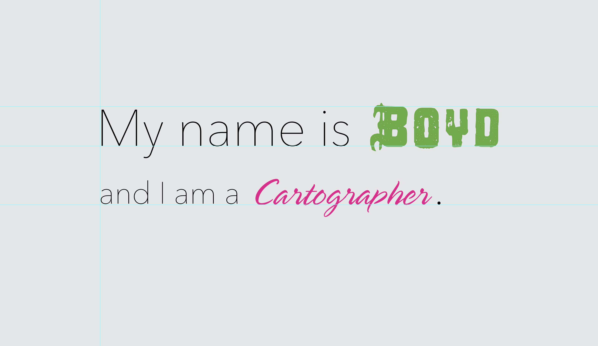

Presentation
Open in new tabPresentation Topics
- Introduction & announcements
- Persuasive maps
- Examples from lab 4
- Font
- Labeling & figure/ground
- Tasks
- Lab
Task
In our last task, you will use an unorthodox method to find “twin” neighborhoods in Lexington and compare them to areas on campus that you frequent. The method is straightforward: We’ll fold a map of Lexington in half, punch a hole through the map where we live or work on campus, and then find the reflected location on the other side of the map. This reflection is the twin. How different is this location from where we live or work? What do these differences tell us about Lexington’s neighborhoods and their history?
Our approach is similar the Folded Map Project, an art project to generate discussion about segregation and housing disparity in Chicago. The project’s creator, Tonika Johnson, paired residents from the city’s north and south sides and asked them to visit each other’s homes. Part of the discussion centered on the historical practice of “redlining”, a discriminatory practice that denied loans to people of color (and other minorities) and investment in “high risk” neighborhoods. The practice was common in the 1930s and 1940s, and the federal government’s Home Owners’ Loan Corporation (HOLC) created maps to identify these neighborhoods. The legacy of this practice is still evident today – neighborhoods that saw investment during this period faired better than those that didn’t.
To complete our exercise, we need a line on which to fold our map. You might know of a dividing line in your hometown, e.g., train tracks that split your town into two geographical imaginations. While this line might be arbitrarily chosen, we’ll use Main Street, a major thoroughfare that runs through the heart of Lexington. We’ll also use the HOLC’s map of Lexington to identify neighborhoods that were redlined in the 1930s.
Home Owners’ Loan Corporation Residential Security Map, 1938 (Enlarge)
{kind=link}
We can observe from this map, the University of Kentucky campus was small in 1938 and bounded by neighborhoods graded in the lowest classes. Since that time, and especially in the last decade, the university has experienced tremendous investment in new dormitories and campus amenities, like the Gatton Student Center. The university’s growth has also impacted surrounding neighborhoods, displacing many long-time residents and creating enclaves of (often expensive) off-campus housing for students. The campus continues to grow.
Let’s take a look at the map we’ll use for this task. It is a minimal map showing building footprints, the road network, and Main Street prominently in red.
Lexington building footprints with Main Street highlighted (Enlarge or print)
While you may print this map and do the following exercise on your own, this task will be done in recitation with provided paper maps.
Finding the twin location
Fold this map along the red line and look at the side showing campus. You will then locate a place on campus where you spend a lot of time, let’s say your dormitory. If you live off-campus, and it is shown on this map, you can select that location. Once you have selected your location on the campus side of the map, push a paper clip through that point, flip the map over, and note the reflected location.
For example, let’s find Patterson Office Tower’s Main Street reflection. Push a pin through POT and photograph the other side of the folded map.
Patterson Office Tower reflection photographed
Next, visit Google Maps and zoom into the location you found on the other side of the map. You’ll need to zoom close enough to see the building footprints to make a match.
Locate the area using Google Maps, zoomed in
Enable Google Street View and tour the area. You may also decide to visit the neighborhood in person.
Can you find a grocery, bank, or restaurant nearby? Make observations about the quality of the public transportation; how are the sidewalks and bus stops? What is the age and condition of the buildings? Are there any parks or green spaces nearby? What grade is this area on the HOLC’s map of Lexington?
Next, screen capture two Google Street View images showing the your selected area and the reflected area you found on the other side of the map. You can use the Snipping Tool on Windows or Command-Shift-4 on Mac to capture the images.
Google Street View of Patterson Office Tower
Google Street View of Patterson Office Tower twin
Ok, let’s turn to making a submission for this task.
Completing the task
After you complete the above section, make sure you do the following to finish this task:
- Locate a place on campus and find its reflection on the provided map.
- Make a screen capture for each location using Google Street View. Save those images to your computer.
- Using the questions above as a guide, write a short paragraph (3-5 sentences) describing what you find in the reflected location. Please try not to make a value judgement about the area, but rather describe what you see. You are not a tourist looking for entertainment in this exercise, but rather an observer.
Submitting the task
Upload your screen captures and text to the Module 5 task on Canvas by the published due date. (2 points for each screen capture and 1 point for the response.)
Lab
In the previous module we discovered what makes an effective map. In this module, we’ll explore how to design a map that that is also persuasive. A map might seem persuasive if its design appears clean and professional – these map makers know what they are doing! Another approach is to make bold or unorthodox design choices that draw attention to the map or project. In this lab, we’ll explore design choices that can engage the viewer and help tell our story.
Table of Contents
- Introduction
- Typefaces
- Changing the figure-ground relationship
- Assignment: Option 1
- Assignment: Option 2
- Submitting the assignment
Introduction
A persuasive map is one that is designed to influence the viewer’s opinion and possibly take action, like voting for a candidate or supporting a cause. It also may be designed to persuade the viewer to think differently about a topic, like the impact of climate change or the distribution of wealth. Persuasion is not necessarily bad, but it is important to understand the author’s intent and whether they are transparent with their data and methods.
All good persuasive maps start with one thing in common: They grab the viewer’s attention. After that, the map’s story unfolds in its cartographic design (i.e., skillful use of visual variables), proper employment of map elements, and a balanced layout with strong visual hierarchy. So the question becomes how do we grab the viewer’s attention? We’ll explore this question by selecting unique typefaces and fine tuning our page’s visual hierarchy.
Typefaces
Typefaces are a powerful tool for map makers. They can be used to convey a map’s theme, like a map of the Old West that uses a typeface that looks like it was printed on a letterpress. They can also be used to convey a map’s tone, like a map of a city’s nightlife that uses a typeface that looks like neon lights.
In fact, a map could be made entirely of text. Can you recognize this US city represented in this map?
A map of Chicago
A typeface is a collection of fonts that share a common design. A font is a specific style of a typeface. For example, the typeface Helvetica has many fonts, like Helvetica Bold and Helvetica Italic. Type designers create typefaces and fonts, and they are often inspired by historical typefaces. Helvetica, one of the most popular commercial typefaces, was inspired by the typeface Akzidenz-Grotesk, which was designed in 1890s.
Characteristics of a font
Type design is concerned with modifying font characteristics to achieve legibility while creating a unique style. Legibility is the ease with which a reader can distinguish one letter from another; a function of the font’s characteristics. We broadly group typefaces into two categories: serif and sans serif. Serif typefaces have small lines at the end of each stroke, while sans serif typefaces do not.
As a map maker, we often don’t create fonts from scratch, but rather choose ones that we like and are legible. After that, we are concerned about making text on our maps readable. Readability is the ease with which a reader can recognize words, sentences, and paragraphs. It is a function of the font’s size, spacing, and line length. Thankfully, we have some style conventions we can follow.
Mapping typeface style conventions
While there are no hard and fast rules in selecting and styling typefaces, our goal is make our maps readable and engaging. The first step is selecting a sans serif and serif typefaces that we’ll use for the majority of our map’s text. Then we’ll select a few accent typefaces that we’ll use sparingly to draw attention to specific map elements. We’ll visit Google Fonts to find our typefaces, however, other sites like DaFont and Font Squirrel are good resources. Using your linkblue login for Adobe Creative Cloud, you can use certain fonts from Adobe Fonts.
Ok, let’s get started. The workflow is pretty simple. Visit Google Fonts, search for typefaces, download them, and then install them on your computer. The file downloaded from Google Fonts will be a zipped file that should be extracted first. Inside the extracted folder, you’ll find the font files with the .ttf file extension.
- Visit Google Fonts
- Search for Open Sans, Noto Serif, and Lobster.
- Download the typefaces and extract the zip file.
- Install the typefaces on your computer by double-clicking the .ttf files.
Downloading Google Fonts
Feel free to explore and install other typefaces. It’s fun to test different font pairings and see how they look on the page. Next, we’ll do just that.
- Launch QGIS and create a new layout.
- Add three text boxes to the layout and style them with the Open Sans, Noto Serif, and Lobster fonts in each box.
- Also, note the many variations that come with each typeface. For example, Noto Serif has many weights.
Showing font specimens in a layout
Keep iterating over different typefaces with the goal of discovering unique combinations. The end result might be a mark you could use for identity on your layouts.

Searching for unique font pairings
Labeling features
Labeling features on the map is a common map making activity. But, it is one of the most difficult ones. Good label placement increases readability through visually balanced, intuitive, and predictable placement.
Labeling vector features
We can manually place labels on the map, but this is time consuming and often results in a cluttered map. Instead, we’ll use QGIS’s labeling engine to automatically place labels on the map from a vector layer’s attribute table. However, if we wanted precisely placed labels, we would need use a different tool, like Adobe Illustrator. That’s application is explored in our GEO 305 & 405 courses.
Let’s get some data for Lexington streets and label them. We’ll download an archive of the city’s street and buildings from Openstreetmap.org and then import them into QGIS. We’ll then access the label engine in QGIS’s Layer Styling panel.
- Download and extract lexington-main-street.zip into a workspace folder called lab-05.
- Open QGIS and add the buildings and highway layers.
- Make sure the map projection is EPSG: 3089 and rotate the map canvas so that Main Street is horizontal.
Add layers, rotate canvas, and project to EPSG: 3089
Next, make sure the highway layer is selected and click on the Labels icon in the Layer Styling panel to initiate feature labeling. The attribute that contains the name of the street is called name. We’ll use this attribute to label the streets. The style of text is up to you, but think about the typeface we discussed earlier.
- Click on the Labels icon in the Layer Styling panel for the highway layer.
- Select Single Labels and choose the name attribute in the Value dropdown menu.
- Choose the Open Sans typeface and select an italic style.
First step in labeling line layers
How’s it look? Not too well at this step. We need to adjust the placement of the labels. We’ll do this by adjusting the label’s Placement and then add a halo Buffer.
- Select the Placement tab and choose Curved in the Mode dropdown menu.
- Make the Allowed Positions to be On Line.
Curving labels on line
Getting better, but it is hard to read the dark text over a dark line. We need to “knock out” the line below the label. We’ll do this by adding a halo around the text.
- Select the Buffer tab and choose Draw text buffer.
- Make sure the color matches the background color.
Adding a halo buffer for labels
To finish labeling, we need to test whether the labels are readable at our target scale with a map canvas placed in a layout. If the labels are easily readable at 400%, the labels can be read in most printed applications. If not, we’ll adjust the label’s size and buffer width to make them readable.
- Create a new 11 x 17 inch layout and add a map canvas. Fill the entire page with the map.
- Use the Zoom dropdown to zoom to 400%.
- Change the size of the label’s text and buffer width to add as many labels as possible while still making then readable.
Check readability of labels and make changes accordingly
Here we have better labeling than the default settings. Depending on your purpose and the type of feature being labeled, the labeling options could vary dramatically. For example, labeling a point layer of cities would require a different approach than labeling a line layer of streets.
Ok, save your map project before moving on to our next section.
Changing the figure-ground relationship
The figure-ground relationship is a design principle that describes the relationship between the foreground and background of a map. The foreground is the area of the map that is the focus of the viewer’s attention, while the background is the area that is not – it’s area for resting the eyes.
By default, QGIS uses a white background for the map canvas. This is a good choice for printed maps, but most maps today are viewed on a screen. The “dark mode” aesthetic is popular in many applications,and has been shown to reduce eye strain and power consumption on mobile devices. Another dark mode advantage is that it helps photographs and other colorful elements stand out. We’ll explore this idea by adding a photograph to our map and changing the background color of the map canvas.
The first step in reversing the figure-ground relationship is to change the background color of the map canvas. We’ll do this by changing the map canvas’s Background color in the Project Properties > General tab.
- From the main QGIS menu, select Project > Properties > General tab.
- Click on the Background color button and choose a dark color,
#333333. - Click OK to save the changes.
Changing the map canvas background color
Now, we need to change the placed map canvas in our layout to use the same color. Switch to the layout and select the map canvas.
- Select the map’s Item Properties panel and change the Background color to the same color selected earlier
Changing the layout background color
OK, now the tough part. We need to revisit each layer and labeling options and make adjustments to their colors. The label’s buffer color needs to match the background color and text color should be lighter than the road color. The buildings layer should be darker than roads but lighter than the background. Got it?
- Revisit each layer and label color option and make them lighter against the dark background.
- Aim for a strong visual hierarchy.
Changing the feature and label colors in new figure-ground relationship
Adding a photograph to the layout
Adding a photograph to a layout is a great way to add visual interest to a map. We can even use a photograph as a “call out” to highlight a specific location on the map. We’ll use a Google Street View photograph of Patterson Office Tower (saved in the same folder as our spatial data) and highlight the location of the photograph with an arrow on the map.
- Use the Add Picture, Add Shape, and Add Arrow layout tools to add a photograph of Patterson Office Tower to the layout, mark POT with a rectangle, and add an arrow pointing from the photograph to the rectangle.
- Modify each elements Item Properties to make them stand out against the dark background.
The following screenshots show how to add each of the three elements to the layout.
Add a picture and change its frame color
Add a shape representing Patterson Office Tower
Add an arrow pointing to Patterson Office Tower
Ok, that’s it! Save your project. You can use it for the base map for your lab assignment.
Assignment: Option 1
The BluDDCon, the Bluegrass Dungeons & Dragons Convention, is holding their annual competitive games at the Loudoun House in Castlewood Park (201 Castlewood Dr, Lexington, KY 40505). They need a map showing this location on a map with a photograph of the Loudoun House, which can be taken in-person or from Google Street View. They want an arrow from the photograph pointing this impressive Gothic style villa. The map should show streets with labels and part of the University of Kentucky campus. The map should be 11 x 17 inches and include a bold title and layout. You should add additional map elements as needed.
Save your QGIS project often via the menu item Project > Save.
Video: 25 min
Deliverables
Please follow these requirements for the assignment:
- Create an 11 x 17 inch layout using the highway and buildings layers. Make sure to show both the Loudoun House and Willy T. Young Library on campus. (3 points)
- Add labels for the highway layer that curve over the highway lines and are clearly readable. (2 points)
- Add a photograph of the Loudoun House and an arrow pointing to the building. (2 points)
- Add the title, “Bluegrass Dungeons & Dragons Convention” with an accent typeface. (1 point)
- Add the title, “Loudoun House, Castlewood Park” with another typeface. (1 point)
- Include a scale bar, north arrow, and attribution (including one for Openstreetmap.org). (1 point)
- Export the layout as a GeoPDF file.
- Name the file
bluddcon-linkblue.pdfand replacelinkbluewith your linkblue name. For example,bluddcon-jabr01.pdf.
Assignment: Option 2
BluDDCon is also looking for fantasy maps that explore a futuristic or post-apocalyptic Lexington. They have a data file, flooded-lexington.zip, that shows the region after runaway global warming raised sea levels over 1,000 feet. What kind of story could you tell with this data? The first rule of fantasy mapping is that there are no rules. For example, consider the following layout (which is included in the data file):
Port Wildcat after meltdown
Save your QGIS project often via the menu item Project > Save.
Video: 8 min
Deliverables
Please follow these requirements for the assignment:
- Create an 11 x 17 inch layout using one of the flooded map layers. (3 points)
- Add three images to the layout that are made with generative AI technology, e.g., DALL·E 2, that develop your story. (3 points)
- Add a captivating title and subtitle. (2 point)
- Add a narrative that explains what happened. (1 point)
- Include a scale bar, north arrow, and attribution (including one for the generative AI technology that was used). (1 point)
- Export the layout as a GeoPDF file.
- Name the file
bluddcon-future-linkblue.pdfand replacelinkbluewith your linkblue name. For example,bluddcon-future-jabr01.pdf.
Submitting the assignment
Upload your PDF file from one of the assignment options to the Module 5 assignment on Canvas by the published due date. If you do both options, upload both PDF files in two separate submissions. Make note in a submission comment that you are going for extra credit. (+5 extra credit points)
Happy designing!
.